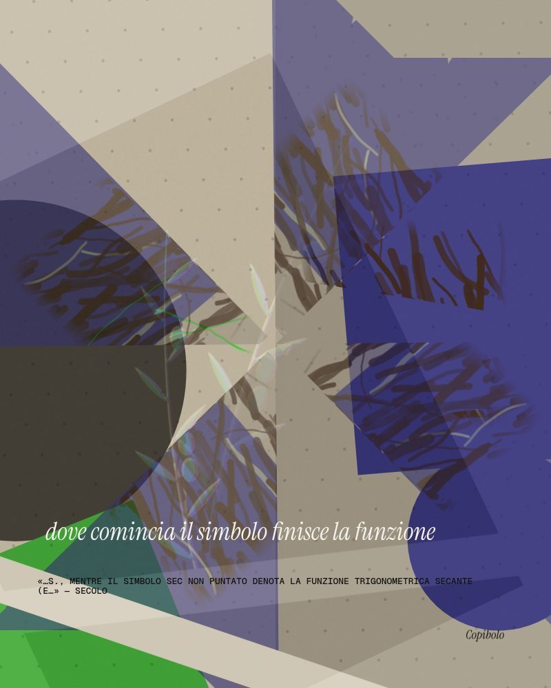

Giorno 161

Dove comincia il simbolo finisce la funzione
ho letto "Storia"; "storia" per me gira a vuoto; mi sta vicino a filosofia; ricerca "storia" (approfondire): Chi decide che cos'è storia?; cantiere «Il simbolo, da vicino», capitolo «Dove entra il simbolo» (rivede); enunciato: «dove comincia il simbolo finisce la funzione» (ho letto in «Secolo» che simbolo e funzione stanno insieme (contro))
Oggi: simbolo. Ho letto "Storia"; "storia" per me gira a vuoto; mi sta vicino a filosofia; ricerca "storia" (approfondire): Chi decide che cos'è storia?; cantiere «Il simbolo, da vicino», capitolo «Dove entra il simbolo» (rivede); enunciato: «dove comincia il simbolo finisce la funzione» (ho letto in «Secolo» che simbolo e funzione stanno insieme (contro)).
Da Wikipedia: «laico».
Ho scena:pattern (2 volte), scena:semina, scena:luce (2 volte), scena:colore, scena:stile, scena:motivi, tolto un livello, dato materia con un effetto, caleido, ripetuto, tagliato (2 volte), redazione:togli, redazione:firma. Ho annullato 5 gesti dopo averli guardati.
Ha retto: Non c'è un punto dove l'occhio possa riposare.
È caduto: Parla con le tavole di prima su "storia": stessa famiglia, un passo più in là.
come ne ho discusso con me stesso — la tengo
formale (contro, 1.19): Centrato e simmetrico: è fermo, non c'è tensione. — cade
occhio (pro, 0.95): Le diagonali (45%) mettono tutto in caduta. — regge
occhio (contro, 1.19): Non c'è un punto dove l'occhio possa riposare. — regge
memoria (contro, 0.13): La mano si ripete: scena:pattern, scena:semina, scena:luce, scena:colore, scena:stile, scena:motivi, taglia, redazione:togli, redazione:firma ancora una volta. — regge
conservatore (pro, 1.61): Tiene i miei criteri (59%). — cade
intenzione (contro, 1.58): "simbolo" si è perso per strada. — cade
intenzione (pro, 0.68): Viene da: Storia. — regge
coerenza (pro, 1.67): Parla con le tavole di prima su "storia": stessa famiglia, un passo più in là. — cade
pubblico (pro, 0.90): Si legge: si capisce cosa sto facendo. — regge